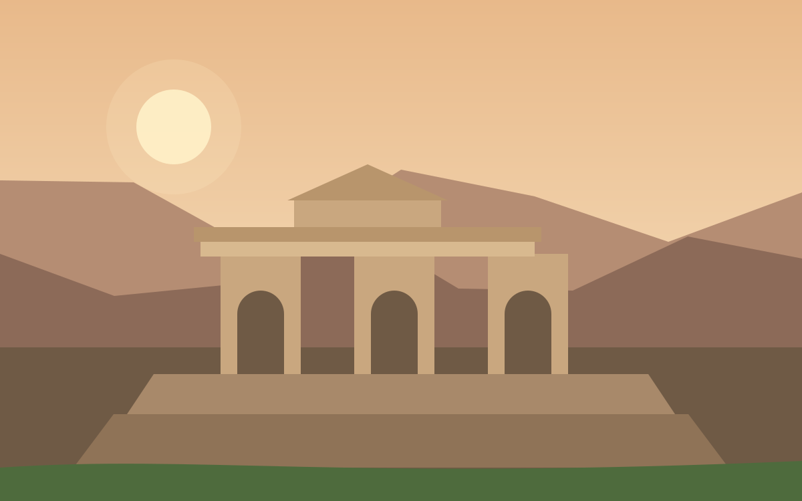
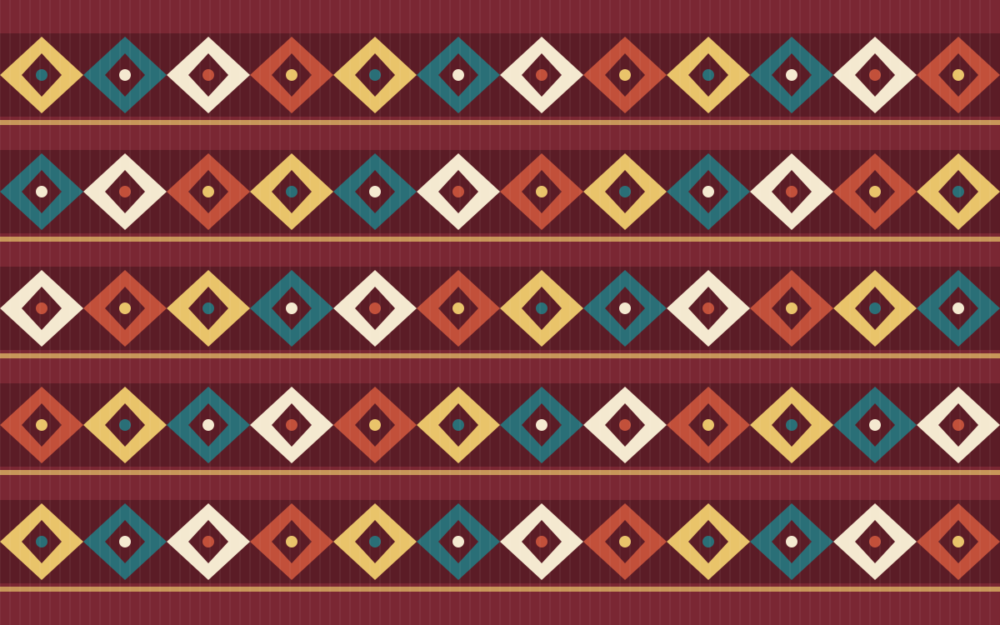

Historic site
Sharda Peeth
A historic site associated with learning and scholarship, sometimes referred to as Sharda University.
Explore details – Sharda PeethDiscover Kashmir
Discover the stories, flavours and traditions behind Kashmir’s landscapes.
Explore heritage and community traditions with curiosity and respect.

A historic site associated with learning and scholarship, sometimes referred to as Sharda University.
Explore details – Sharda Peeth
Explore regional culinary traditions and locally prepared meals.
Explore details – Traditional food
Learn about local craft practices, clothing and community life.
Explore details – Handicrafts & traditionsRegional meals, tea traditions and hospitality offer a window into local life. A later version could feature locally owned restaurants and artisans once their details and permissions have been verified.
Visitor informationCraft practices, clothing and community life are part of how places in the region are experienced. This prototype introduces the theme only; it does not describe specific crafts or makers.
Ask before photographing people, respect cultural practices, and support locally owned services where possible.